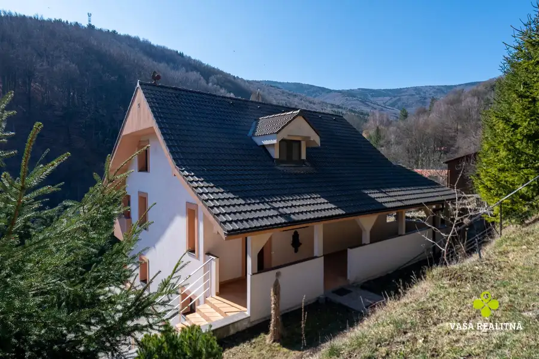
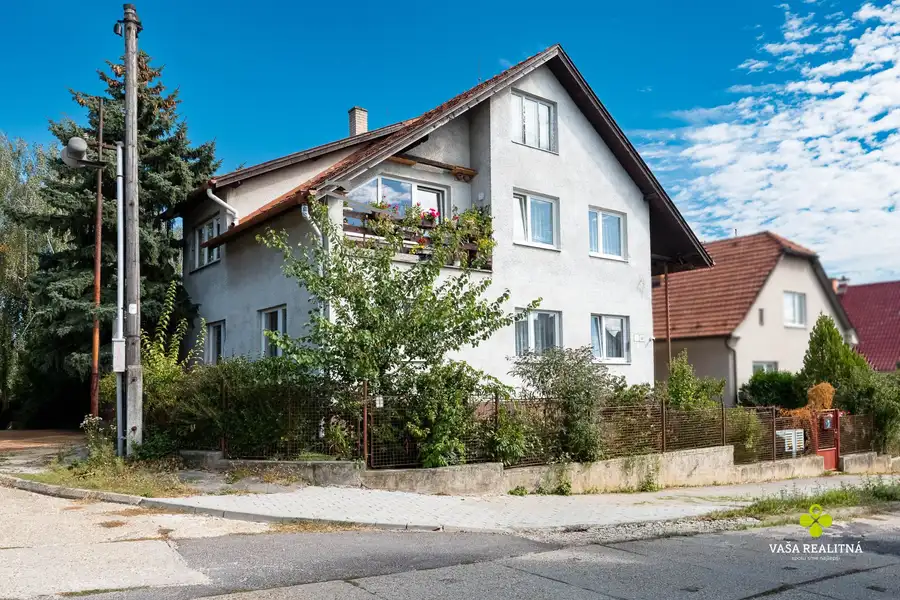
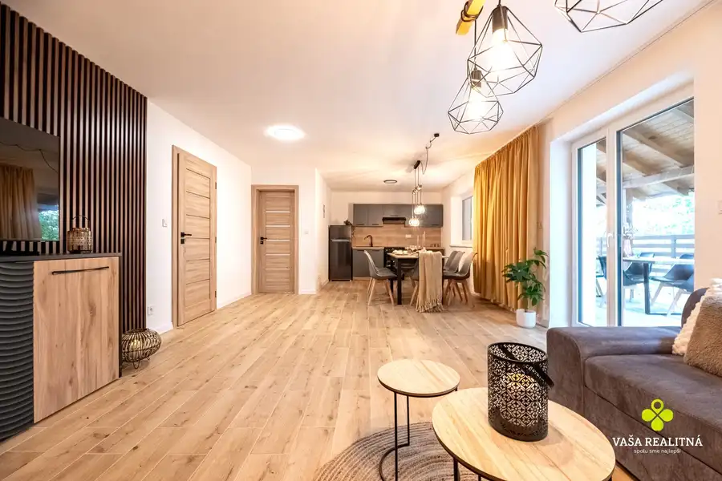

Nadčasový rodinný dom s krásnou záhradou a absolútnym súkromím
Prievidza
- Plocha250 m²
- StavPôvodný stav
O nehnuteľnosti
Vaša Realitná ponúka na predaj vkusne zariadený 5-izbový rodinný dom v Prievidzi, ktorý spája veľkorysý vnútorný priestor, súkromie a rovinatý pozemok s celkovou výmerou 1 100 m².Dom bol skolaudovaný v roku 2011 a je pripravený na okamžité bývanie. Dve obytné podlažia, praktická dispozícia, dve terasy a rozľahlá záhrada z neho robia vhodný domov aj pre početnejšiu rodinu.LOKALITARodinný dom sa nachádza na ulici Nábrežie J. Kalinčiaka v pokojnej obytnej časti Prievidze, mimo hlavného ruchu mesta. Lokalita ponúka príjemné rodinné bývanie s dobrou dostupnosťou do centra.V blízkom okolí sa nachádzajú školy, obchody, zastávky MHD, pošta, banky, obchodné centrum a ďalšia občianska vybavenosť. Výhodou je pokojné prostredie, dostatok súkromia a zároveň jednoduché napojenie na ostatné časti mesta.RODINNÝ DOMSamostatne stojaci murovaný rodinný dom bol daný do užívania v roku 2011. Pozostáva z jedného nadzemného podlažia a obytného podkrovia. Zastavaná plocha domu je približne 190 m², pričom úžitková plocha obytného podkrovia podľa projektovej dokumentácie predstavuje 65,34 m².Dom je postavený na betónových základoch a zastrešený valbovou strechou s kvalitnou strešnou krytinou Tondach. Okná sú plastové s izolačným trojsklom a vnútornými kovovými žalúziami. Interiér dopĺňajú masívne drevené dvere, schodisko z tvrdého dreva a nadčasovo riešené kúpeľne. Dom je vkusne zariadený a ponúka kvalitný základ pre pohodlné rodinné bývanie.Parkovanie je zabezpečené priamo pred domom, pričom časť parkovacích miest je prekrytá. Na pozemku sa nachádza aj samostatný záhradný domček s prekrytou terasou, ktorá vytvára príjemné miesto na posedenie, grilovanie a trávenie času s rodinou či priateľmi.DISPOZÍCIAPrízemie tvorí vstupné zádverie, priestranná hala, kuchyňa, jedáleň, obývacia izba, dve samostatné izby, kúpeľňa, samostatné WC, technická miestnosť a schodisko vedúce do obytného podkrovia. Z obývacej a spálňovej časti je priamy vstup na terasu s výmerou približne 30 m². Jej súčasťou je murovaný gril s pizza pecou, trojmiestna vírivka, vďaka čomu môže počas teplejších mesiacov fungovať ako plnohodnotné pokračovanie domu.Obytné podkrovie pozostáva z chodby, dvoch priestranných izieb, dvoch samostatných šatníkov a kúpeľne s WC. Dispozícia domu ponúka dostatok priestoru pre spoločný rodinný život, ale aj potrebné súkromie pre jednotlivých členov domácnosti.TECHNICKÉ VYBAVENIEDom je napojený na všetky inžinierske siete – elektrinu, verejný vodovod, plyn a verejnú kanalizáciu. Vykurovanie je riešené teplovodným podlahovým kúrením napojeným na plynový kotol. Ohrev teplej vody zabezpečuje zásobník doplnený solárnymi kolektormi. Súčasťou technického vybavenia je aj bezpečnostný systém.POZEMOKCelková výmera pozemku je 1 100 m². Záhrada má výmeru 774 m², zastavaná plocha a nádvorie 187 m² a zvyšnú časť tvorí prístupová komunikácia. Pozemok je rovinatý, pravidelného tvaru a kompletne oplotený.Dospelá vegetácia vytvára prirodzené súkromie a príjemnú atmosféru. Za pozemkom sa nenachádza ďalšia stavba, vďaka čomu záhrada pôsobí otvorene a nerušene. Je tu dostatok miesta na oddychovú časť, detskú zónu, bazén alebo ďalšie využitie podľa predstáv nového majiteľa.Tento dom je vhodný pre rodinu, ktorá nechce robiť kompromisy medzi priestorom, súkromím a dostupnosťou mesta. Ponúka veľkorysé izby, upravenú záhradu, vonkajšie terasy a prostredie, v ktorom sa dá pohodlne fungovať počas celého roka.HLAVNÉ VÝHODYPokojná lokalita v Prievidzi, pozemok s výmerou 1 100 m², dve obytné podlažia, päť izieb, dve terasy, podlahové vykurovanie, solárne kolektory, záhradný domček a vysoká miera súkromia.V prípade záujmu o bližšie informácie alebo dohodnutie obhliadky nás kontaktujte na telefónnych číslach:0911 866 8870915 756 855E-mail: mirkamajtanova@vasarealitna.skVaša RealitnáBojnická cesta 4, Prievidza
Parametre
| Bezpečnosť | Bezpečnostné dvere |
|---|---|
| Doprava | Diaľkový autobus, Vlak, Cesta, MHD, Cyklistická infraštruktúra |
| Druh | Rodinný dom |
| Dátum zverejnenia | 15. 9. 2026 |
| Energetický certifikát budovy | nie je |
| Plocha pozemku | 1100 m² |
| Počet izieb / miestností | 5 |
| Počet kúpeľní | 2 |
| Počet nadzemných podlaží | 2 |
| Počet spální | 4 |
| Počet vonkajších parkovacích miest | 3 |
| Prístupová komunikácia | Asfaltová |
| Rok výstavby | 2011 |
| Stav nehnuteľnosti | Pôvodný stav |
| Telekomunikácie | Internet |
| Terás | 2 |
| Terén pozemku | Rovinatý |
| Typ | Predaj |
| Typ konštrukcie | Tehlová |
| Vybavenie | Terasa, Predzáhradka, Vonkajšie parkovacie miesto, Záhrada, Krb, Altánok / posedenie, Záhradný domček |
| Vykurovanie | Podlahové, Krb |
| Zastavaná plocha | 190 m² |
| Úžitková plocha | 250 m² |
Kde to je


Mohlo by Vás zaujímať

DomNové10 259 900 €Očarujúci rodinný dom s panoramatickými výhľadmi Chvojnica 300 m² Hľadáte nehnuteľnosť v prostredí, ktoré má prírodný charakter , dostatok súkromia a zároveň umožňuje plnohodnotné bývanie?Vaša Realitná ponúka na…
DomNové10 319 000 €Priestranný dvojgeneračný rodinný dom, pozemok 898 m² – Bojnice Bojnice 300 m² Hľadáte priestranný rodinný dom v Bojniciach, ktorý ponúka dostatok miesta pre veľkú rodinu, dvojgeneračné bývanie alebo zaujímavú investičnú…
Chata, drevenica, zrubNové10 309 000 €Nová kompletne zariadená 5 izbová chata vo Valči Valča 176 m² Vaša Realitná ponúka na predaj úplne novú, štýlovo zariadenú chatu v obklopení horského potoka, vzdialenú len 450 m od vyhľadávaného lyžiarskeho…